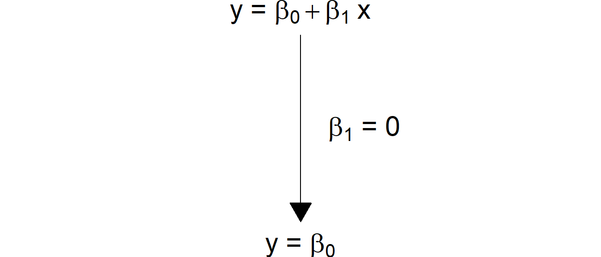
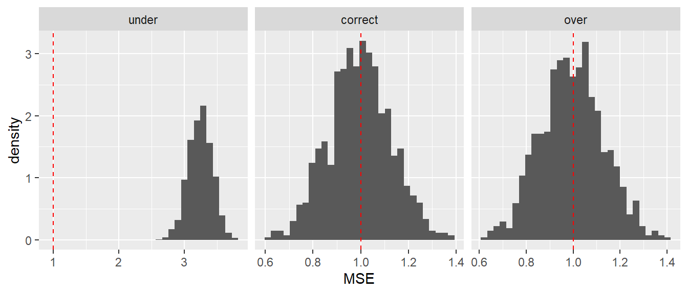
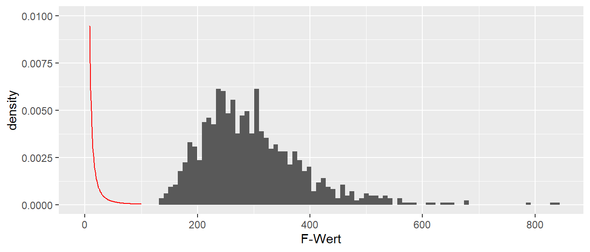
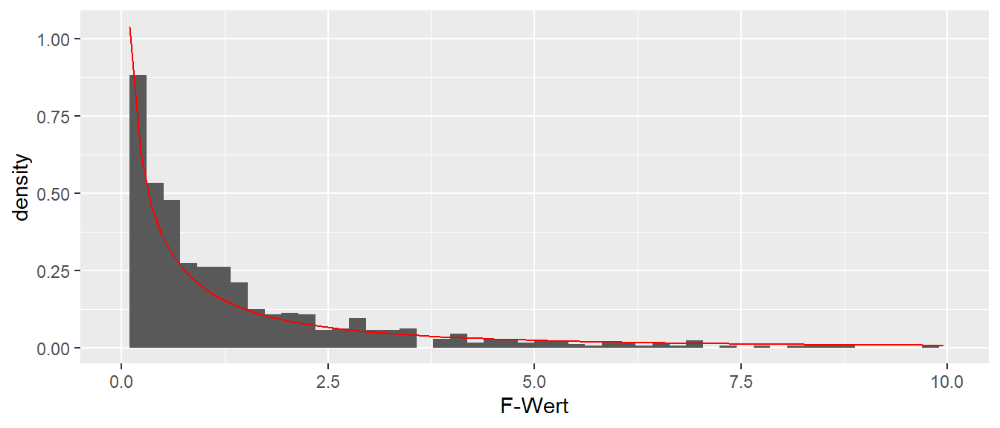
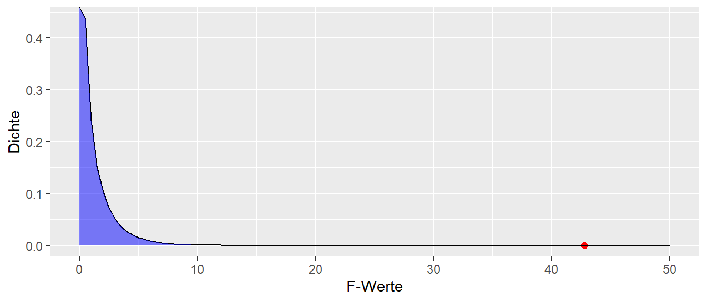
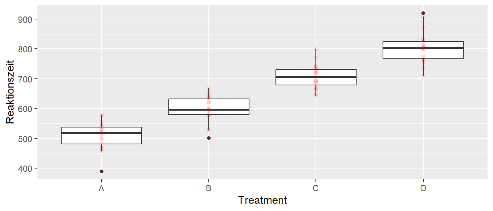

In den bisherigen Kapiteln sind die behandelten Modelle Stück für Stück immer komplizierter geworden. Angefangen mit dem einfachen linearen Modell, wurde die Erweiterung zum additiven multiplen linearen Modell mit mehreren \(X\)-Variablen vollzogen. Im nächsten Schritt konnten die \(X\)-Variablen miteinander interagieren, während im letzten Schritt die Anforderung aufgehoben wurde, dass die \(X\)-Variablen kontinuierlich sein mussten. Im Kern wurde aber immer das einfache Modell der Punkt-Steigungsform beibehalten. Im Zuge der Behandlung von Indikatorvariablen wurde eine direkte Verbindung zwischen dem linearen Modell und dem t-Test hergeleitet. Im folgenden Abschnitt wird nun eine direkte Verbindung zwischen dem Regressionsmodell und der Varianzanalyse hergeleitet, bei der es sich letztendlich nur um eine Verallgemeinerung des t-Test handelt.
20.1 Genereller Linearer Modell Testansatz
Ausgangspunkt ist wieder das Modell der einfachen linearen Regression, mit nur einer \(X\)-Variable.
mod0 <-lm(y ~ x, simple)summary(mod0)
Call:
lm(formula = y ~ x, data = simple)
Residuals:
1 2 3 4
-0.5817 0.9898 -0.2345 -0.1736
Coefficients:
Estimate Std. Error t value Pr(>|t|)
(Intercept) 1.8414 0.7008 2.628 0.119
x 0.4574 0.3746 1.221 0.346
Residual standard error: 0.8376 on 2 degrees of freedom
Multiple R-squared: 0.4271, Adjusted R-squared: 0.1406
F-statistic: 1.491 on 1 and 2 DF, p-value: 0.3465
Zunächst werden wieder die Residuen betrachtet, die Abweichungen der beobachteten Daten \(y_i\) von der vorhergesagten Werten der Regressionsgeraden \(\hat{y}_i\). Im Rahmen der Behandlung des Determinationskoeffizienten \(R^2\) sind bereits Quadratsummen und deren Unterteilung besprochen worden. Dort wurde die Aufteilung der Varianz von \(Y\), bezeichnet als \(SSTO\), die totale Varianz in die beiden Komponenten Regressionsvarianz \(SSR\) und Fehlervarianz \(SSE\) eingeführt.
\[\begin{equation}
SSTO = SSR + SSE
\end{equation}\]
Die Fehlerquadratsumme SSE, die Summe der quadrierten Abweichungen zwischen dem beobachteten Wert \(y_i\) und dem vorhergesagten Wert \(\hat{y}_i\) ist definiert mittels:
Also letztendlich wieder nur die Summe der quadrierten Residuen. Um für gegebene Daten die vorhergesagten Werte \(\hat{y}_i\) berechnen zu können, wird ein Modell und die dazugehörigen Modellkoeffizienten \(\beta_0\) und \(\beta_1\) benötigt. Das einfache lineare Modell hat in diesem Fall zwei Modellparameter. Streng genommen besitzt das Modell noch einen weiteren Parameter nämlich \(\sigma^2\), da \(\sigma^2\) für die Berechnung der \(\hat{y}_i\) nicht unbedingt notwendig ist, kann er erstmal ignoriert werden. Zuvor wurde bereits die Anzahl der Modellparameter formalisiert und als eigener Parameter bezeichnet. Per Konvention wird die Parameteranzahl mit \(p\) bezeichnet. Im einfachen Fall mit den beiden Parametern \(\beta_0\) und \(\beta_1\) gilt daher \(p = 2\).
Die Anzahl der Parameter \(p\) spielt eine Rolle wenn die sogenannten Freiheitsgrade\(df\) (degrees of freedom) bestimmt werden müssen. Umgangssprachlich bezeichnen die Freiheitsgerade die Anzahl der Daten die frei variiert werden können. Die tatsächliche Definition ist komplizierter und auch nicht immer eindeutig. Die Freiheitsgrade für die Fehlerquadratsumme \(SSE\) berechnet sich mittels der Formel \(N-p\). \(N\) bezeichnet die Anzahl der Beobachtungen, in unserem Fall die Anzahl der Datenpunkte.
\[\begin{equation}
df_E := N - p
\end{equation}\]
Die Freiheitsgerade \(df\) bestimmen die effektive Anzahl der Beobachtungen die zur Verfügung stehen um die Varianz \(\sigma^2\) des Modells abzuschätzen. Dadurch, dass zwei Parameter anhand der Daten für das Modell bestimmt werden, fallen zwei Datenpunkt als unabhängige Informationsquellen weg. Anders ausgedrückt, wenn die beiden Modellparameter \(\beta_0\) und \(\beta_1\) bekannt sind, dann sind nur noch \(N-2\) Datenpunkt frei variierbar. Sobald die Werte von \(N-2\) Datenpunkten und die beiden Parameter bekannt, können die verbleibenden beiden Werte berechnet werden. Daher der Begriff der Freiheitsgrade.
Wenn \(SSE\) durch die Anzahl der Freiheitsgerade geteilt wird, dann lässt sich zeigen, das dieser Wert ein erwartungstreuer Schätzer für die Residualvarianz \(\sigma^2\) unter der Verteilungsannahme \(\epsilon_i \sim \mathcal{N}(0,\sigma^2)\) der Daten ist. Das Verhältnis von \(SSE\) zu \(df\) wird als Mean squared error (\(MSE\)) bezeichnet.
Im Allgemeinen bedeutet groß \(SS\) immer, das es sich um die Summe von quadrierten Werten handelt (\(S\)um of \(S\)squares) während ein \(M\) bedeutet das die Quadratsumme durch ihre Freiheitsgrade geteilt wurde (\(M\)ean). Tatsächlich ist der Ansatz in Formel \(\eqref{eq-mlm-hier-MSE}\) schon bekannt und bei der Stichprobenvarianz \(s^2\) angewendet worden. Wenn eine Stichprobe der Größe \(N\) mit Werten \(y_i\) vorliegt, dann wird die Stichprobenvarianz mittels der bekannten Formel berechnet:
Was bei dieser Formel vielleicht schon immer etwas undurchsichtig gewesen ist, ist der Nenner mit \(N-1\) anstatt einfach \(N\) wie es vom Mittelwert bekannt ist. Hier kommen die Freiheitsgerade zum Einsatz. Um die Varianz überhaupt berechnen zu können, wird ein Parameter, den Mittelwert \(\hat{y}\) der \(y_i\) benötigt. Der Mittelwert wird allerdings anhand der Daten berechnet. Dies führt dazu, dass nach Berechnung von \(\hat{y}\) nur noch \(N-1\) Werte frei variiert werden können. Sobald, neben dem Mittelwert \(\bar{y}\), \(N-1\) Werte bekannt sind, kann der verbleibenden \(N\)-ten Wert berechnet werden. Durch die Berechnung des Mittelwerts ist daher ein Freiheitsgerad verloren gegangen. Der Zähler bei der Varianz ist wieder eine Summe quadrierter Abweichungen also ein \(SS\) und damit wird die Varianz \(s^2\) insgesamt zu einer \(MS\).
Seien die Datenpunkte \([1,2,3,4,5]\) gegeben. Der Mittelwert \(\hat{y} = 3\). Wenn nun \(N-1=4\) Werte, z.B. die ersten vier Wert \([1,2,3,4]\) und der Mittelwert bekannt sind, dann ist der fünfte Wert festgelegt.
Das Ziel ist nun eine Metrik zu entwickeln die es erlaubt abschätzen, ob die Hinzunahme von zusätzlichen Modellparametern zu einer Verbesserung der Modellvorhersage führt. D.h. der Analyseprozess startet mit einem einfachen Modell und sukzessive werden weitere Variablen zum Modell hinzugefügt und es wird überprüft ob dadurch die Modellvorhersage verbessert wird. Eine Verbesserung wird in diesem Fall über die Veränderung in \(SSE\) ermittelt. Wenn zusätzliche Modellparameter zu einer Verbesserung führen, dann sollte eine relevante Reduktion der Fehlervarianz \(SSE\) beobachtet werden. Die Residuen werden kleiner und die Präzision der Vorhersagen wird verbessert. Als Randbedingung sollen die zu vergleichenden Modelle in einer Hierarchie zueinander stehen. Dies bedeutet, dass einfachere Modelle als Teilmodelle von komplexeren Modellen interpretiert werden.
Dazu wird zunächst eine Unterscheidung zwischen einem vollem Modell (\(F\)ull model) und einem reduzierten Modell (\(R\)educed model) getroffen. Als das volle Modell wird immer das kompliziertere Modell, also dasjenige mit größerem \(p\), bezeichnet. Dementsprechend ist das reduzierte Modell das weniger komplizierte Modell, welches einem Spezialfall des vollen Modell entspricht. Dabei ist die Bezeichnung voll bzw. reduziertes Modell immer nur temporär. Ein volles Modell kann bei einem weiteren Vergleich zum reduzierten Modell werden. Im weiteren wird bei der Bezeichnung der Modell die englische Bezeichung (full vs. reduced) verwendet. Für das Beispiel der einfachen lineare Regression ist das full model das bekannte Modell:
Um die Residualvarianzen \(SSE\) für die beiden Modell voneinander unterscheiden zu können, werden diese mit \(SSE(F)\) für das full model und \(SSE(R)\) für das reduced model bezeichnet. Die Residualvarianz \(SSE(F)\) berechnet sich wie oben angegeben mittels:
Dieses Modell hat \(p = 2\) Modellparameter und somit \(df_{F} = N - p = N - 2\) Freiheitsgrade. Nun kann die Frage gestellt werden, ob der Modellparameter \(\beta_1\) wirklich benötigt wird? Vielleicht zeigt die \(X\)-Variable gar keinen Zusammenhang mit der \(Y\)-Variable und durch die Inklusion von \(X\) wird letztendlich nur Datenrauschen im Modell angepasst. Aus dieser Überlegung heraus, ist es möglich ein reduziertes Modell zu formulieren bei dem der Parameter \(\beta_1\) fehlt.
Im reduzierten Modell ist nur noch ein Paramter \(\beta_0\) vorhanden, somit gilt \(p = 1\) und entsprechend \(df_{R} = N - 1\).
Mit etwas Algebra lässt sich zeigen, dass im Allgemeinen \(SSE(F) \leq SSE(R)\) gilt. Dieser Zusammenhang lässt sich auch heuristisch herleiten. Wenn es keinen Zusammenhang zwischen \(X\) und \(Y\) gibt, dann wird der \(\beta_1\) im full model nahezu \(0\) sein und Formel \(\eqref{eq-mlm-hier-ssef}\) wird zu \(SSE(R)\). Im realistischen Fall wird aber, selbst wenn kein Zusammenhang besteht zwischen \(X\) und \(Y\), ein Teil des immer vorhandenen Rauschens in den Daten mittels \(\beta_1\) gefittet. Das führt dazu, das praktisch immer \(SSE(F)\) etwas kleiner ist als \(SSE(R)\). Somit folgt der beschriebene Zusammenhang zwischen \(SSE(F)\) und \(SSE(R)\).
20.1.1 Reduziertes Modell und Stichprobenvarianz (deep dive)
Zwischen der Residualvarianz im reduzierten Modell \(SSE(R)\), dem optimalen Modellparameter \(\beta_0\) und der Stichprobenvarianz besteht ein enger Zusammenhang bzw. Identität wie sich anhand der folgenden Herleitung sehen lässt. Der Modellparameter \(\beta_0\) im reduzierten Modell soll, wie üblich, unter der Minimierung der Summe der Quadrate der Abweichungen, sprich \(SSE(R)\), ermittelt werden.
Das Minimum \(min[SSE]\) wird bestimmt, indem, wie schon beim einfachen Regressionsmodell, nach dem Modellparameter \(\beta_0\) abgeleitet und das Resultat \(=0\) gesetzt wird. Ein bisschen Algebra führt zu:
Somit ist derjenige Wert von \(\beta_0\), der im reduzierten Modell die Abweichungen minimiert, der Mittelwert \(\bar{y}\). Daraus folgt wiederum, dass im reduzierten Modell mit der Modellgleichung \(y_i = \beta_0 + \epsilon_i\) für alle \(i\), also alle Datenpunkte, der gleiche Vorhersagewert bestimmt wird, nämlich der Mittelwert \(\bar{y}\) der Stichprobe. Daraus folgt wiederum, das der Schätzer für \(\sigma^2\), nämlich \(MSE\) also \(SSE(R)/df\) ist. Die Freiheitsgrade berechnen sich, wie bereits besprochen, mittels \(N - p\), wobei für \(p\) im reduced model \(p = 1\) gilt, da nur ein einziger Modellparameter vorhanden ist, eben \(\beta_0\). Daraus folgt für \(\hat{\sigma}^2\):
Zurückkommend auf die Entwicklung einer Metrik um das volle und das reduzierte Modell miteinander zu vergleichen. Sei nun das reduzierte Modell korrekt. D.h. die Hinzunahme von \(X\) sollte keine Verbesserung des Modells, keine Verbesserung in der Modellvorhersage, nach sich ziehen. Konkret bedeutet dies, dass \(SSE(R)\) und \(SSE(F)\) in etwas gleich groß sein sollten, bzw. \(SSE(F)\) nur wenig besser (also kleiner) als \(SSE(R)\) ist. Wenn die Differenz der beiden Quadratsummen gebildet wird, dann sollte diese Differenz entsprechend eher klein sein.
Beide Modelle sind in etwas gleich gut, fitten die Daten also in etwa gleich gut. Das volle Modell etwas besser, das es durch den zusätzlichen Parameter etwas flexibler als das reduzierte Modell ist.
Sei nun von von der entgegen gesetzten Annahme ausgegangen. Das reduzierte Modell ist falsch und die Variable \(X\) wird benötigt um die Varianz in \(Y\) aufzuklären. In diesem Fall sollte die Differenz \(\eqref{eq-mlm-hier-div}\) einen deutlich größeren Wert annehmen. Das reduzierte Modell kann denjenigen Teil der Varianz von \(Y\) nicht aufklären der durch \(X\) entsteht. Dadurch wandert die durch \(X\) verursachte Varianz in die Residuen, was dazu führt das \(SSE(R)\) größer wird. Im vollem Modell dagegen, kann die durch \(X\) entstehende Varianz durch den zusätzlichen Modellparameter \(\beta_1\) erklärt werden und entsprechend sind die Residuen geringer. Wenn die Residuen geringer werden führt das wiederum dazu, dass der Wert von \(SSE(F)\) kleiner wird.
Zusammengefasst, aus der Differenz in den \(SSE\) zwischen den beiden Modellen, konnte heuristisch eine Metrik hergeleitet werden. Diese Metrik erlaubt verschiedene Modell miteinander zu vergleichen. Wenn das reduzierte, einfachere, Modell ausreicht um die Daten zu erklären, dann wird die Differenz \(\eqref{eq-mlm-hier-div}\) eher klein ausfallen. Wenn dagegen die zusätzlichen Parameter im vollem Modell benötigt werden und die Varianz in \(Y\) zu erklären, dann wird der Unterschied \(\eqref{eq-mlm-hier-div}\) eher groß werden.
Beispiel 20.1 Es sei einfacher Datensätze gegeben. Der Datensatz folgt dem Modell \(Y = 3 + 2X_1+ \epsilon\). Im Datensatz ist noch eine weitere Variable \(X_2\) die keinen Zusammenhang mit \(Y\) aufweist. In R
Nun werden drei Modelle an die Daten angepasst. Ein reduziertes Modell mit nur einem \(Y\)-Achsenabschnitt, ein Modell mit der Variable \(X_1\) und ein Modell mit beiden Variablen \(X_1\) und \(X_2\). Laut Konstruktion der Daten, hat \(X_2\) keinen Zusammenhang mit \(Y\) und ist daher überflüssig für die Modellanpassung. Das Modell ist überparametrisiert. Die \(SSE\) können mittels der Funktion sigma() durch Quadrieren und Multiplikation mit den Freiheitsgraden berechnet werden. Entsprechend folgt in R:
Der Unterschied zwischen mod_r und mod_f ist noch sehr groß, während der Unterschied zwischen mod_f und mod_u deutlich kleiner ausfällt. Allerdings ist \(SSE\) für das überparametrisierte Modell mod_u trotzdem durch Zufall kleiner.
In den Beispiel wurden drei Modell an die Daten angepasst. Es hätte auch ein Vergleich zwischen dem Modell mod_r und mod_u gemacht werden können. Allerdings unterscheiden sich die beiden Modell nicht mehr nur um einen Modellparameter sondern um zwei Modellparameter. Dies sollte auch bei Veränderungen im \(SSE\) berücksichtigt werden, da die Bewertung der Bedeutsamkeit eines Unterschieds zwischen zwei Modellen noch davon abhängig ist, um wie vielen Parameter sich die beiden Modelle sich voneinander unterscheiden. Wenn im vollen Modell \(p = 10\) Parameter sind und im reduzierten Modell eben nur \(p = 1\) Parameter ist, dann ist ein gegebener Unterschied in den \(SSE\)s zwischen den Modellen anders zu bewerten, als wenn im vollem Modell \(p = 2\) Parameter geschätzt werden. Bei gleichem Unterschied zwischen den Modellen ist der Unterschied im ersteren Fall weniger bedeutsam im Vergleich zum letzteren Fall. Daher erscheint es sinnvoll den Unterschied zwischen den Modellen noch anhand des Unterschieds in der Anzahl der Parameter zu kalibrieren. Anders formuliert, es wird die Veränderung in der Varianzverkleinerung pro Freiheitsgrad betrachtet. So können nun auch Modelle mit größeren Unterschieden in der Parameteranzahl \(p\) miteinander verglichen werden.
Mit \(p_F\) = Anzahl der Parameter im vollen Modell und \(p_R\) = Anzahl der Parameter im reduzierten Modell gilt:
Nach dem ersten Gleichheitszeichen wurde ein bekannte mathematischer Trick angewendet, indem eine \(0\) in Form von \(+N-N\) addiert wurde. Dies ermöglicht von der Beschreibung der Parameteranzahl \(p_{F}\) bzw. \(p_{R}\) auf die Schreibweise mit Freiheitsgraden zu wechseln. Achtung, die Reihenfolge der Modellparameter ändert sich beim Übergang von \(p\) zu \(df\). Als Merkhilfe, der Unterschied muss positiv sein, d.h. es wird immer der größere Wert vom kleineren Wert abgezogen. Somit wird der Unterschied zwischen den beiden Modellen folgendermaßen aufgeschrieben und der Term erhält auch noch eine eigene Bezeichnung \(MS_{\textrm{test}}\) für mean squared test.
Unter der Annahme, das das reduzierte Modell korrekt und den üblichen Modellannahmen im Regressionsmodell zur Normalverteilung der Residuen \(\epsilon_i \sim \mathcal{N}(0,\sigma^2)\), lässt sich zeigen, dass \(MS_{\textrm{test}}\) ein Schätzer für die Varianz \(\sigma^2\) ist. D.h. es gilt:
D.h. neben dem schon bekannten Schätzer \(MSE\) für \(\sigma^2\) wird durch \(MS_{\textrm{test}}\) eine weiterer Schätzer für \(\sigma^2\) erhalten. Aus der Annahme, das das reduzierte Modell korrekt ist, folgt, dass auch das volle Modell korrekt ist. Das volle Modell enthält das reduzierte Modell als einen Spezialfall. Der zusätzlich Parameter im vollen Modell sollte in diesem Fall, in der Nähe von \(0\) sein, da kein Zusammenhang zwischen \(X\) und \(Y\) besteht wenn das reduzierte Modell korrekt ist. Daraus folgt, dass \(MSE(F)\) ebenfalls ein Schätzer für die Varianz \(\sigma^2\) unter den Modellannahmen \(\epsilon_i \sim \mathcal{N}(0,\sigma^2)\) ist. Diese Eigenschaft wurde schon die ganze Zeit bei der Berechnung der Regressionen verwendet.
Insgesamt, sind durch durch diese Überlegungen zwei Ansätze vorhanden um \(\sigma^2\) anhand der Daten zu schätzen. Einmal über das bekannte \(MSE\) und nun neu dazu gekommen über \(MS_{\text{test}}\). Die Beziehung zwischen dem vollen und dem reduzierten Modell kann nun auch dahingehend interpretiert werden, das das reduzierte Modell gleich dem vollen Modell ist, allerdings mit einer zusätzlichen Randbedingung. Die Randbedingung ist, dass der zusätzliche Parameter im vollen Modell den fixen Wert \(0\) hat. Wenn das volle Modell die folgende Form hat:
Daher läuft ein Vergleich der beiden Modell darauf hinaus zu testen ob der Parameter \(\beta_1 = 0\) ist. Dies erklärt auch noch mal die Interpretation, dass das volle Modell korrekt ist, wenn das reduzierte Modell korrekt ist. Das reduzierte Modell ist nur ein Spezialfall des vollen Modells (siehe Abbildung 20.1) .

Abbildung 20.1: Zusammenhang zwischen dem vollen und dem reduzierten Modell.
Nun fehlt noch ein letzter Schritt um die Metrik abzuschließen. Da es sich bei der Größe \(MS_{\textrm{test}}\) letztendlich um eine Varianz handelt, kann die Größe der Quadratsummen verändern werden, indem die Einheiten der abhängigen Variablen \(Y\) verändert werden. Wenn die abhängige Variable \(Y\) beispielsweise eine Länge darstellen, dann würde beim Übergang von \([m]\) auf \([cm]\), der Unterschied in Formel \(\eqref{eq-mlm-hier-mstest}\) um den Faktor \(10\times 10=100\) vergrößert werden ohne das wirklich eine Veränderung in den Modellen stattgefunden hat. Daher wird \(MS_{\textrm{test}}\) noch einmal normiert, indem der Term durch \(MS_{E(F)}\) geteilt wird. Damit fallen alle Probleme mit der Interpretation der Größe der Modellunterschiede durch Änderungen in den Einheiten weg (siehe auch Maxwell, Delaney, und Kelley 2004, p.75).
Dies stellt nun die finale Metrik dar. Es lässt sich nun wieder zeigen, diese Metrik unter der Annahme, das das reduzierte Modell korrekt ist, einer theoretische Verteilung folgt. Dies ist die \(F\)-Verteilung mit \(df_{E(R)} - df_{E(F)}\) und \(df_{E(F)}\) Freiheitsgeraden (Die Herleitung würde leider wieder den Umfang des Skript sprengen). Die Annahme das das reduzierte Modell korrekt ist, stellt somit wieder die \(H_0\) dar.
\[\begin{equation*}
F = \frac{MS_{\textrm{test}}}{MS_{E(F)}} \sim F(df_{E(R)}-df_{E(F)},df_{E(F)})
\end{equation*}\]
Zur Erinnerung sind in Abbildung 20.2 nochmal ein paar Beispiele für \(F\)-Verteilung mit verschiedenen Freiheitsgeraden abgebildet.
Abbildung 20.2: Beispiele für die F-Verteilung mit verschiedenen Freiheitsgraden \(df_1, df_2\)
Da beide Terme in Formel \(\eqref{eq-mlm-hier-Ftest}\) die Varianz abschätzen deutet ein Wert in der Nähe von \(1\) daraufhin, das das reduzierte Modell adäquat ist um die Daten zu beschreiben und die Hinzunahme des Parameters im vollen Modell keine Verbesserung liefert.
Sobald nun aber wieder eine bekannte, theoretische Verteilung unter einer \(H_0\) vorhanden ist, kann wieder das bereits bekannte Instrumentarium zur Hypothesentestung angewendet werden. Fällt der beobachtete Wert \(F\)-Wert für ein gegebenes \(\alpha\) in einen kritischen Bereich (siehe Abbildung 20.3 für ein Beispiel), dann kann dies als Evidenz gegen die \(H_0\) interpretiert werden. Wir sind überrascht diesen Wert unter der \(H_0\) zu beobachten und lehnen die \(H_0\), das das einfachere Modell korrekt ist ab. Der beobachtete \(F\)-Wert wird als Evidenz dafür gewertet, das das komplexere, volle Modell die Daten besser abbildet und statistisch signifikant mehr Varianz der abhängigen Variable modellieren kann.
Abbildung 20.3: F-Verteilung mit \(df_1 = 5, df_2 = 10\) und kritischem Wert bei \(\alpha=0.05\)
Um diesen letzten Schritt noch einmal besser zu verstehen sei im Folgenden eine weitere Simulation in Anlehnung an Beispiel Beispiel 20.1 betrachtet. Gegeben sei ein DGP mit der folgenden Form:
Der DGP ist demnach wieder ein einaches lineares Regressionsmodell mit den Modellparametern \(\beta_0 = 3\), \(\beta_1 = 2\) und normalverteilten Residuen mit \(\sigma = 1\). Dieser DGP wird nun mit \(N = 30\) Datenpunkten mit entsprechenden Datenpaare \((y_i,x_i)\) insgesamt \(N_{sim} = 1000\) mal simuliert. In jedem der \(1000\) Durchgänge werden drei verschiedene Modelle an die Daten angepasst. Einmal ein reduziertes Modell ohne \(\beta_1\), ein korrektes Modell mit \(\beta_0\) und \(\beta_1\) und wieder ein überparameterisiertes Modell mit \(\beta_0\), \(\beta_1\) und \(\beta_2\). Als \(X_2\) wird eine Zufallsvariable erzeugt, die der Standardnormalverteilung folgt (D.h. \(X_2 \sim \mathcal{N}(0,1)\). Zwischen \(X_2\) und \(Y\) besteht somit kein Zusammenhang. Daher sollte die Hinzunahme von \(X_2\) zu keiner Verbesserung des Modells führen. Formal werden also die folgenden drei Modell verwendet.
In Abbildung 20.4 ist das Ergebnis der Simulation zu sehen. Die Verteilung der \(1000\) berechneten \(MSE\) für die drei an die jeweils generierten Daten angepassten Modelle sind als Histogramme dargestellt. Zusätzlich, da der wahren Wert \(\sigma^2 = 1\) bekannt, ist \(\sigma^2\) rot in die Histogramme eingezeichnet.

Abbildung 20.4: Verteilung von \(\hat{\sigma}^2 = MSE\) für die drei verschiedenen Modelle für die \(1000\) Simulationsdurchgänge.
Im reduzierten Modell (under) wird die Residualvarianz klar in allen Durchgängen überschätzt. Da der Modellparameter für \(X\) fehlt, wird diejenige Varianz von \(Y\) die auf \(X\) zurückgeht in die Residualvarianz mit aufgenommen. Dies führt dazu, dass die Residualvarianz deutlich zu groß ist und somit \(MSE\) groß wird. Im mittleren Graphen, beim korrekten Modell, sind die abgeschätzten Residualvarianzen um den tatsächlichen Wert herum verteilt. Im einzelnen Fall kommt es natürlich auf Grund der Stichprobenvariabilität zur Überschätzung bzw. Unterschätzung von \(\sigma^2\). Im Mittel sind die Werte jedoch trotzdem korrekt und der Schätzer \(MSE\) ist Erwartungstreu für \(\sigma^2\). Im letzten Fall, für das überparameterisierte Modell (over) wird die Residualvarianz ebenfalls korrekt abgeschätzt. Die Hinzunahme der zufälligen Variable \(X_2\) führt wie erwartet zu keiner Verschlechterung von \(\hat{\sigma}^2\) aber eben auch zu keiner relevanten Verbesserung.
Als nächstes wird nun die Verteilung der beobachteten \(F\)-Werte abgetragen. D.h. für jeden der \(1000\) simulierten Durchgänge, wird ein \(F\)-Wert berechnet. Einmal für den Vergleich des reduzierten zum vollen Modell und ein weiterer \(F\)-Wert für den Vergleich vom vollen zum überparametrisierten Modell. Der \(F\)-Wert wird in beiden Fällen mittels der Formel\(\eqref{eq-mlm-hier-Ftest}\) berechnet, allerdings entsprechend eben mit zwei unterschiedlichen Modellpaaren.

(a) Vergleich von correct vs under

(b) Vergleich von over vs correct
Abbildung 20.5: F-Werte der Modellvergleiche. Die theoretische Verteilung unter der \(H_0\) ist in rot abgetragen.
In Abbildung 20.5 sind die Verteilungen der \(F\)-Werte für die \(1000\) Simulationen einmal für den Vergleich correct vs. under (a) und over vs. correct (b) abgetragen. Zunächst wird Abbildung 20.5 (b) betrachtet. Ein Vergleich der beobachtete Verteilung (Balken) mit der theoretischen Verteilung unter der \(H_0\) (rot), zeigt, dass die beobachteten Werte sehr gut denjenigen folgen die unter der \(H_0\) zu erwarten wären. Das Histogramm folgt relativ gut dem roten Graphen. Der Großteil der Werte liegt in der Umgebung von \(1\), was auch der Erwartung entspricht. Die Hinzunahme der Variable \(X_2\), die keinen Zusammenhang mit \(Y\) hat, führt zu keiner Verbesserung des Modells. Die bedeutet nun, dass in \(\alpha\)-Prozent der Fälle die \(H_0\) ablehnt würde. Im Gegensatz dazu folgt die Verteilung der beobachteten \(F\)-Wert in Abbildung 20.5 (a) nicht einmal annähernd der erwarteten Verteilung unter der \(H_0\). Es sind praktisch keine Werte in der Umgebung von \(1\). Die \(H_0\) Annahme bedeutet in diesem Fall ist, dass die Hinzunahme von \(X_1\) zu keiner Verbesserung führt. Dementsprechend würde in praktisch allen Fällen die \(H_0\) abgelehnt werden, da der beobachtete \(F\)-Wert deutlich größer als der kritische Wert der \(F\)-Verteilung ist. Insgesamt kommt es daher zu einer Modellauswahl anhand der Vergleiche. Die Anpassung des reduzierten Modells ist deutlich, sprich signifikant, schlechter als diejenige des vollen Modells, während die Hinzunahme der Variablen \(X_2\) zu keiner signifikanten Verbesserung der Modellanpassung führt.
20.1.1.1 Zusammenfassung
Der Vergleich von Modellen miteinander, erlaubt es Verbesserung/Verschlechterung der Modellvorhersage statistisch zu überprüfen. Über die Statistik \(\eqref{eq-mlm-hier-Ftest}\) wurde eine Teststatistik hergeleitet, die einer bekannten theoretischen Verteilung folgt. Wenn dieser \(F\)-Test statistisch signifikant wird, dann wird dies als Evidenz dafür gewertet, das das volle Modell die Daten so viel besser modelliert, das dieses Modell dem reduzierten Modell vorgezogen werden sollte.
20.2 Modellvergleich in R
In R können die Modellvergleiche mittels der Funktion anova() durchgeführt werden. Dazu werden die gefitteten lm()-Modelle an anova() als Parameter übergeben.
anova(mod_f, mod_u)
Analysis of Variance Table
Model 1: y ~ x_1
Model 2: y ~ x_1 + x_2
Res.Df RSS Df Sum of Sq F Pr(>F)
1 3 2.5898
2 2 1.1313 1 1.4585 2.5783 0.2496
anova() vergleicht die beiden Modell miteinander und erstellt eine Tabelle mit den Freiheitsgraden Res.Df der beiden Modellen, den \(MSE\)RSS, dem Unterschied in den Freiheitsgraden zwischen den Modellen Df, der Statistik \(MS_{\textrm{test}}\)Sum of Sq, dem resultierenden \(F\)-Wert und dem p-Wert unter der \(H_0\).
20.3 Modellvergleiche anhand eines Beispiel
Im folgenden sei ein etwas umfangreiches Beispiel betrachtet bei dem Modellvergleiche untersucht werden, bei den die Modelle sich nur um einen Parameter unterscheiden, also \(\Delta p = 1\) gilt und nachfolgenden auch noch Modellvergleiche mit \(\Delta p > 1\). In diesem Zusammenhang wird nun auch der Begriff der Modellhierarchien eingeführt.
In einer hypothetischen Studie wurde der Zusammenhang zwischen der Bewertung eines Bonbon (like) auf einer Skala von \(0-100\). Der Bewertung soll in Abhängigkeit vom Zuckergehalt (sweetness) und dem Saftanteil (moisture) untersucht werden. In Abbildung 20.6 ist ein exemplarischer Datensatz abgebildet. Es ist zu erkennen, dass Bonbons umso besser bewertet werden umso höher der Zuckergrad war, aber das dieser Effekt durch den Saftanteil beeinflusst wird. Die Bewertung wird umso besser mit dem Zuckeranteil, umso höher der Saftanteil ist. D.h. der Zunahme der Bewertung auf Grund des Zuckeranteils, wird durch den Saftanteil modifiziert und spricht somit für einen Interaktionseffekt.
Abbildung 20.6: Zusammenhang zwischen der Präferenz für ein Bonbon und dem Süßgrad (g pro Bonbon/100) für verschiedene Saftanteile 0% - 20%
Im folgenden sollen nun Vergleiche zwischen verschiedenen Modell gemacht werden. Zunächst mit Modellen die sich nur um einen Modellparameter voneinander unterscheiden.
20.3.1 Modellvergleiche mit \(\Delta p = 1\)
Entsprechend des Eindrucks aus ?fig-mlm-hier-candy-exmpale kann das volle Modell dementsprechend mit \(X_1\) = sweetness und \(X_2\) = moisture folgendermaßen modelliert werden.
Das volle Modell besitzt daher \(p = 4\) Modellparameter und es können drei verschiedene reduzierte Modelle betrachtet werden. Das einfachste Modell sei \(m_0\) und dementsprechend ansteigend bis zum vollen Modell \(m_3\).
Das Modell \(m_0\) besitzt nur einen \(y\)-Achsenabschnitt \(\beta_0\), der, wie oben gezeigt wurde, zu \(\bar{y}\) wird. Modell \(m_1\) hat einen zusätzlichen Parameter mit einem Steigungskoeffizienten \(\beta_1\) für den Zuckeranteil, \(m_1\) hat zusätzlich noch einen Parameter \(\beta_2\) für den Saftanteil. \(m_3\) ist dagegen das volle Modell mit den beiden additiven Haupteffekten und einem Interaktionseffekt. Diese Modell können nun in einer Hierarchie angeordnet werden.
Das Modell \(m_3\) ist oben in der Hierarchie. Untergeordnete Modell können nun immer so erhalten werden, dass Modellparameter in übergeordneten Modellen gleich Null gesetzt werden, wie das oben schon besprochen wurde. Beispielsweise ist das Modell \(m_1\) dem Modell \(m_2\) gleich mit der Randbedingung das \(\beta_2 = 0\) gilt. In Bezug auf die Freiheitsgrade der Modell ergibt sich ebenfalls die gleiche hierarchische Anordnung.
Sei zunächst der Vergleich zwischen \(m_0\) gegen \(m_1\) betrachtet. D.h. es soll \(MS_{\text{test}}\) berechnet werden, bei dem \(m_0\) das reduzierte Modell und \(m_1\) das volle Modell darstellt.
Wie bereits gezeigt, kann dazu die anova()-Funktion in R verwendet werden, indem die beiden gefitteten Modelle (tatsächlich können auch mehr Modelle übergeben werden) als Parameter an anova() übergeben werden.
anova(mod_0, mod_1)
Analysis of Variance Table
Model 1: like ~ 1
Model 2: like ~ sweetness
Res.Df RSS Df Sum of Sq F Pr(>F)
1 77 54237
2 76 34695 1 19542 42.805 6.303e-09 ***
---
Signif. codes: 0 '***' 0.001 '**' 0.01 '*' 0.05 '.' 0.1 ' ' 1
Das gleiche Ergebnis kann natürlich auch per Hand berechnet werden, indem die quadrierten Modellresiduen aufsummiert werden:
In der Spalte Df ist der Unterschied in der Anzahl der Modellparameter zwischen den beiden Modellen angeben. In der Spalte Sum of Sq wird die \(MS_{\text{test}}\)-Statistik dokumentiert berechnet als der Unterschied zwischen \(SSE(R) - SSE(F)\).
SSE_R - SSE_F
[1] 19541.46
Der resultierende \(F\)-Wert nach Formel \(\eqref{eq-mlm-hier-Ftest}\) folgt in der nächsten Spalte zusammen mit dem p-Wert unter der \(H_0\).
F <- (SSE_R - SSE_F)/(77-76)/(SSE_F/76)F
[1] 42.80543
1-pf(F, 77-76, 76)
[1] 6.302609e-09
In Abbildung 20.7 ist die Verteilung der F-Werte unter der \(H_0\) eingezeichnet zusammen mit dem beobachteten Werte von \(F = 42.805\). Es ist zu erkennen das der beobachtete Werte so weit rechts in der Verteilung ist, dass unter der \(H_0\) es extrem unwahrscheinlich ist einen solchen Wert zu beobachten.

Abbildung 20.7: Verteilung der F-Werte unter der \(H_0\) und der beobachtete F-Wert (rot)
Dementsprechend kann von einem statistisch signifikanten Ergebnis gesprochen werden und die \(H_0\) das das einfachere Modell \(m_0\) ausreicht zugunsten des komplexeren Modells wird abgelehnt. Dieser Ansatz kann nun einfach so weitergeführt werden. Als nächstes der der Vergleich zwischen \(m_1\) gegen \(m_2\).
Analysis of Variance Table
Model 1: like ~ sweetness
Model 2: like ~ sweetness + moisture
Res.Df RSS Df Sum of Sq F Pr(>F)
1 76 34695
2 75 6459 1 28236 327.86 < 2.2e-16 ***
---
Signif. codes: 0 '***' 0.001 '**' 0.01 '*' 0.05 '.' 0.1 ' ' 1
Wiederum deutet der Test einen darauf, das das komplexere Modell das beide Variablen enthält zu einer Verbesserung der Modellvorhersage führt. Abschließend dann der letzte Vergleich \(m_3\) gegen \(m_2\).
Analysis of Variance Table
Model 1: like ~ sweetness + moisture
Model 2: like ~ sweetness * moisture
Res.Df RSS Df Sum of Sq F Pr(>F)
1 75 6459.2
2 74 273.5 1 6185.7 1673.8 < 2.2e-16 ***
---
Signif. codes: 0 '***' 0.001 '**' 0.01 '*' 0.05 '.' 0.1 ' ' 1
Wieder kann statistisch signifikantes Ergebnis beobachtet werden. Zusammenfassend erlaubt dies nun eine Definition für Modellhierarchien zu geben.
Definition 20.1 (Modellhierarchie) Eine Modellhierarchie beschreibt eine verschachtelte Modellstruktur (nested models) von statistischen Modellen. Jedes Modell in der Hierarchie stellt eine Teilmenge (oder einen Spezialfall) eines darauffolgenden komplexeren Modells dar. Modelle die hierarchisch miteinander in Beziehung stehen können einfach miteinander verglichen werden.
Anmerkung 20.1. Wenn Modell miteinander verglichen werden, die sich nur um einen Parameter voneinander unterschieden, d.h. \(\Delta p = 1\), dann ist der beobachtete \(F\)-Test äquivalent zum \(t\)-Wert den unter summary() angezeigt wird. Der \(F\)-Wert ist gleich dem quadrierten \(t\)-Wert.
summary(mod_3)
Call:
lm(formula = like ~ sweetness * moisture, data = candy)
Residuals:
Min 1Q Median 3Q Max
-4.9943 -1.1231 -0.1122 1.0661 5.8159
Coefficients:
Estimate Std. Error t value Pr(>|t|)
(Intercept) -1.029961 0.871354 -1.182 0.240981
sweetness 0.189563 0.047908 3.957 0.000173 ***
moisture 0.168627 0.070880 2.379 0.019937 *
sweetness:moisture 0.155395 0.003798 40.912 < 2e-16 ***
---
Signif. codes: 0 '***' 0.001 '**' 0.01 '*' 0.05 '.' 0.1 ' ' 1
Residual standard error: 1.922 on 74 degrees of freedom
Multiple R-squared: 0.995, Adjusted R-squared: 0.9948
F-statistic: 4867 on 3 and 74 DF, p-value: < 2.2e-16
t_mod_3
[1] 40.91157
t_mod_3**2
[1] 1673.756
Letztendlich ist dies auch eine Folge dessen, dass die \(t\)-Verteilung ein Spezialfall der \(F\)-Verteilung ist, es gilt \(t(df) = F(1, df)\). Die \(t\)-Verteilung ist einer \(F\)-Verteilung gleich, bei der der erste Freiheitsgrade gleich eins ist und der zweite Freiheitsgrade denjenigen der \(t\)-Verteilung entspricht.
20.3.2 Modellvergleiche mit \(\Delta p > 1\)
Der Vergleich zwischen hierarchisch miteinander in Beziehung stehenden Modell ist nicht darauf beschränkt das die Modelle sich immer nur um einen zusätzlichen Parameter unterscheiden. Wir können genauso das Modell \(m_3\) mit \(p = 4\) Parametern gegen das \(m_0\) Modell mit \(p = 1\) Parametern vergleichen.
Analysis of Variance Table
Model 1: like ~ 1
Model 2: like ~ sweetness * moisture
Res.Df RSS Df Sum of Sq F Pr(>F)
1 77 54237
2 74 273 3 53963 4867.2 < 2.2e-16 ***
---
Signif. codes: 0 '***' 0.001 '**' 0.01 '*' 0.05 '.' 0.1 ' ' 1
In diesem Fall wird getestet ob die Hinzunahme der Parameter \(\beta_1, \beta_2\) und \(\beta_3\) eine statistisch signifikante Verbesserung im Modellfit bedeutet. Entsprechend sind in der Spalte DF jetzt drei Parameterunterschied dokumentiert. Das Prinzip ist aber immer noch das Gleiche. Die Fehlerquadratsummen werden voneinander abgezogen durch den Unterschied in der Parameteranzahl geteilt und mittels der \(MSE(F)\) kalibriert.
Mit diesem Test verstehen wir auch endlich die letzte Zeile im Output von summary(). Tatsächlich wird dieser Test in der Ausgabe von summary() dokumentiert.
summary(mod_3)
Call:
lm(formula = like ~ sweetness * moisture, data = candy)
Residuals:
Min 1Q Median 3Q Max
-4.9943 -1.1231 -0.1122 1.0661 5.8159
Coefficients:
Estimate Std. Error t value Pr(>|t|)
(Intercept) -1.029961 0.871354 -1.182 0.240981
sweetness 0.189563 0.047908 3.957 0.000173 ***
moisture 0.168627 0.070880 2.379 0.019937 *
sweetness:moisture 0.155395 0.003798 40.912 < 2e-16 ***
---
Signif. codes: 0 '***' 0.001 '**' 0.01 '*' 0.05 '.' 0.1 ' ' 1
Residual standard error: 1.922 on 74 degrees of freedom
Multiple R-squared: 0.995, Adjusted R-squared: 0.9948
F-statistic: 4867 on 3 and 74 DF, p-value: < 2.2e-16
D.h. dieser Test prüft immer ob das spezifizierte Modell im Gegensatz zum einfachsten Modell mit nur einem Parameter eine Verbesserung im Modellfit ergibt.
Insgesamt haben wir jetzt einen flexiblen Ansatz gewonnen um Modellparameter zu testen. Bisher haben wir immer nur einen einzelnen Parameter anhand des zum jeweiligen Koeffizienten \(\beta_i\) gehörenden \(t\)-Werts getestet. Die Interpretation war hier die resultierende Steigung der zum Koeffizienten gehörenden Grade. Nun haben wir eine zweite Interpretation in Form der Reduktion der Fehlerquadrate. Der Modellvergleich erlaubt darüber hinaus dasjenige Modell zu bestimmen, welches die Daten am Besten bzw. am einfachsten (mit den wenigstens Parametern) modelliert.
20.4 Modellvergleiche und nominale Variablen
Schauen wir uns als Nächstes an, was passiert wenn wir eine nominale Variable in unser Modell haben und diese durch Indexvariablen darstellen. In Abbildung 20.8 haben wir wieder unser hypothetishces Beispiel mit den Reaktionszeiten unter vier verschiedenen Konditionen A, B, C und D.

Abbildung 20.8: Ein Reaktionszeitexperiment mit vier Stufen A, B, C und D
Klassischerweise würde wir diese Daten mit einer Varianzanalyse (ANOVA) untersuchen, aber wir haben ja schon gesehen das wir diese Analyse auch mit einem linearen Modell durchführen können. In der Varianzanalyse unterteilen wir die Varianz in die drei Komponenten \(SS_{total}, SS_{between}\) und \(SS_{within}\).
Mit etwas motiviertem auf die Gleichungstarren fällt uns natürlich auf, das das ziemlich genauso aussieht wie die Regressionszerlegung in \(SSR\) und \(SSE\). Bei der Herleitung der Varianzanalyse sind euch möglicherweise die folgenden Formeln zur Berechnung der \(F\)-Statistik untergekommen (\(K\) = Anzahl der Faktorstufen).
Schauen wir uns \(s_{between}^2\) etwas genauer an, dann wird vom beobachteten Wert \(y_{ij}\) der jeweiligen Gruppenmittelwert \(\bar{y}_{j.}\) abgezogen, quadriert, aufsummiert und durch \(N-K\) geteilt. Wenn wir die Daten mittels eines linearen Modells modellieren, dann bildet der \(y\)-Achsenabschnitt den Mittelwert der Referenzgruppe ab und die anderen Koeffizienten \(\beta_i\) den Unterschied zu den anderen Mittelwerten. Wenn die Residuen berechnet werden, dann sind das letztendlich nichts anderes als die Abweichungen von den Gruppenmittelwerten. Im linearen Modell hätten wir dann vier Modellparameter \(p = 4\) dementsprechend ist \(N-K = N-p\) und \(s_{within}^2\) ist nichts anderes als \(SSE(F)\). Wenig überraschend lässt sich nun auch noch zeigen, dass der Term \(s_{between}^2\) auch nichts anderes als \(MS(test)\) ist. Daher ist die Varianzanalyse nichts anderes als ein Vergleich von Modellen miteinandern und geht daher vollkommen in unserem Regressionansatz und letztendlich in der Punkt-Steigungsform aus der 7. Klasse auf.
In R können wir eine ANOVA mit der aov()-Funktion berechnen. Die Modellformulierung ist gleich derjenigen wie sie bei lm() verwendet wird.
mod_aov <-aov(rt ~ group, rt_tbl)
Anwendung von summary() auf das gefittete aov-Modell liefert die übliche ANOVA-Tabelle.
Df Sum Sq Mean Sq F value Pr(>F)
group 3 988935 329645 157.3 <2e-16 ***
Residuals 76 159221 2095
---
Signif. codes: 0 '***' 0.001 '**' 0.01 '*' 0.05 '.' 0.1 ' ' 1
Wie sieht das Ganz aus, wenn wir den Ansatz mit Modellhierarchien anwenden? Das vollständige Modell ist dasjenige, bei dem wir für beispielsweise Stufe A als Referenz nehmen und mittels dreier Dummy-Variablen (\(K-1\)) die Abweichungen der Stufen B-D von A modellieren, woraus folgt \(p = 4\).
Wenn das reduzierte Modell die Daten gleich gut fittet wie das vollständige Modell dann bedeutet dass, das die zusätzliche Information über die verschiedenen Konditionstufen meine Vorhersage von \(y_i\) nicht verbessert.
mod <-lm(rt ~ group, rt_tbl)summary(mod)
Call:
lm(formula = rt ~ group, data = rt_tbl)
Residuals:
Min 1Q Median 3Q Max
-120.261 -25.789 -0.857 27.520 114.994
Coefficients:
Estimate Std. Error t value Pr(>|t|)
(Intercept) 509.53 10.23 49.784 < 2e-16 ***
groupB 90.15 14.47 6.228 2.4e-08 ***
groupC 197.41 14.47 13.639 < 2e-16 ***
groupD 295.56 14.47 20.420 < 2e-16 ***
---
Signif. codes: 0 '***' 0.001 '**' 0.01 '*' 0.05 '.' 0.1 ' ' 1
Residual standard error: 45.77 on 76 degrees of freedom
Multiple R-squared: 0.8613, Adjusted R-squared: 0.8559
F-statistic: 157.3 on 3 and 76 DF, p-value: < 2.2e-16
Wenn wir uns die letzte Zeile im summary() Ausdruck anschauen, dann sehen wir dort die gleichen Werte die wir mit aov() erhalten haben. Wenn wir anova() das gefittete lm Modell übergeben erhalten wir sogar genau die gleiche ANOVA Tabelle.
anova(mod)
Analysis of Variance Table
Response: rt
Df Sum Sq Mean Sq F value Pr(>F)
group 3 988935 329645 157.35 < 2.2e-16 ***
Residuals 76 159221 2095
---
Signif. codes: 0 '***' 0.001 '**' 0.01 '*' 0.05 '.' 0.1 ' ' 1
Tatsächlich verwendet aov() im Hintergrund auch nichts anderes als die lm() Funktion. Insgesamt bedeutet das für uns, das die ANOVA und Regression letztendlich auf das gleiche Modell zurück gehen, nämlich auf das Allgemeine Lineare Modell.
20.5 Zum Nacharbeiten
Viele der Ideen die hier diskutiert werden sind aus Christensen (2018, p.57–64). Daher wer noch mal etwas mehr Hintergrund dazu haben möchte, sei diese Quelle wärmstens empfohlen.
Christensen, Ronald. 2018. Analysis of variance, design, and regression: Linear modeling for unbalanced data. CRC Press.
Maxwell, Scott E, Harold D Delaney, und Ken Kelley. 2004. Designing experiments and analyzing data: A model comparison perspective. 2. Aufl. Routledge.